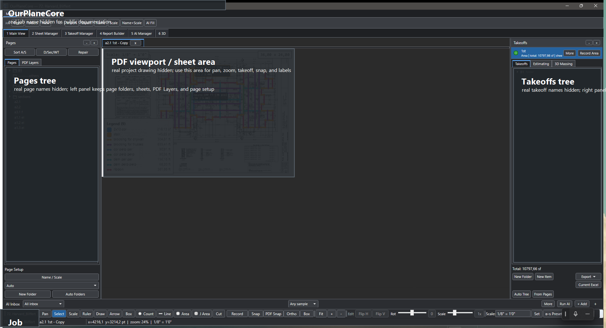
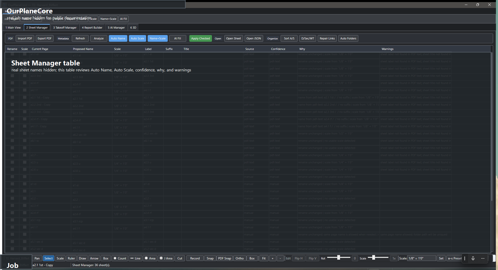
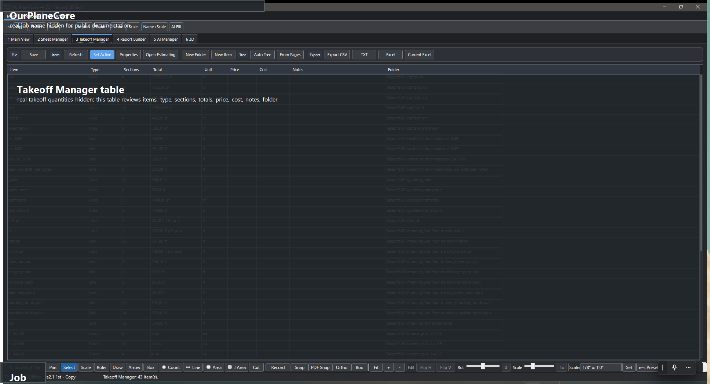

OurPlaneCore¶
Локальная программа для takeoff по PDF — рабочее место estimator-а: PDF viewer, Pages tree, Takeoffs tree, Estimating, Excel export и AI review в одном окне.
Статус
Внутренняя программа, не публичный SaaS. Скриншоты ниже redacted: job names, sheet names, real takeoff names — скрыты.
Нужна каждая кнопка и ползунок?
Полный разбор всех табов, кнопок, ползунков и процесса от и до — OurPlaneCore — полный гайд.

Что внутри¶
-
PDF Workspace
Job, sheets, page folders, layers, overlays, scale, sheet legend, display settings, PDF export with measurements.
-
Sheet Manager
Review-gated
Auto Name/Auto Scale/ confidence /Why/ warnings. Применяется только то, что отмечено галкой. -
Takeoff Tools
Count,Line,Area,J Area,Scale,Select,Ruler, markups, copy/paste. -
:material-folder-tree:{ .lg .middle .kb-mk--green } Pages / Takeoffs
Слева sheets/folders, справа takeoff folders/items. Sheet selection подсвечивает takeoff items, и наоборот.
-
Estimating / Manager
Табличный обзор quantities, sections, units, notes, prices. Current-sheet filter, export commands.
-
Report Builder
Excel-like workspace для сборки report blocks из takeoff source rows (
TemplateCom.xlsm). В разработке. -
AI Inbox
Markers, crops, requests, action drafts. AI работает как помощник с review, а не как скрытая магия — ничего не применяется автоматом.
-
3D Massing
Reviewable draft: footprint, walls, roof planes из markers. Не BIM, а visual QA для проверки openings/roof shape.
Главный workflow¶
- Открыть/создать job.
- Импортировать PDF sheets.
- Sheet Manager: запустить
Auto Name + Scale, проверить confidence/warnings, применить только checked rows. - Разложить sheets:
Sort A/S→D/Sec/WT→Auto Folders. - Открыть sheet в Main View — проверить scale, layers, overlays.
- Создать/выбрать takeoff item (см. Как называть takeoffs).
- Включить Record ([Space]) и нарисовать
Count/Line/Area/J Area. - Проверить totals в
EstimatingилиTakeoff Manager. - Export в CSV/TXT/Excel или прямо в open workbook через
Current Excel.
Hotkeys¶
-
Job / file
Hotkey Действие Ctrl+O Open job Ctrl+Shift+O Recent job picker Ctrl+S Save job state Ctrl+Shift+P Command Palette -
Tools (без модификатора)
Hotkey Действие P Quick Counttarget + RecordL Quick Linetarget + RecordA Quick Areatarget + RecordJ Quick J Areatarget + RecordT New takeoff item Space Toggle Record on active item B then K Add Bookmark (sequence) B Box markup (если K не нажат за 450 мс) -
Snap / constraint
Hotkey Действие F3 Snap— к app-нарисованной геометрииCtrl+F3 PDF Snap— к vector PDF geometryF8 Ortho— 90/45° constraint -
Edit (Pages/Takeoffs tree)
Hotkey Действие Ctrl+C / Ctrl+X / Ctrl+V Copy / Cut / Paste Ctrl+D Duplicate Ctrl+Up / Ctrl+Down Move node up / down F2 Rename Del Delete
Sequence-shortcuts
Некоторые сочетания работают как последовательность из двух нажатий: B потом K в течение 450 мс. Если вторая клавиша не нажата — срабатывает одиночный shortcut (B → Box).
Mental model¶
Программа построена вокруг job folder — всё локально, ничего в облаке.
<job>/
Pages/ PDF sheets, folders, page metadata
Takeoffs/ takeoff folders/items + measurements
sources/ original PDFs
AI_Context/ markers, crops, AI requests/drafts
Data.xml takeoff item/folder metadata
| Слой | Что хранит | Source of truth для |
|---|---|---|
Pages |
Sheets, scale, layers | Sheet name + scale (после review) |
Takeoffs |
Folders, items, sections | Quantity structure |
Measure |
Геометрия в PDF coords | Конкретные числа quantities |
AI |
Crops, requests, drafts | Доказательства (НЕ quantities — пока не accepted) |
Главная логика
Page отвечает за drawing context и scale. Takeoff item — за то, что
считается. Measurement связывает: на каком sheet, с каким scale, в какой
item записана геометрия.
Tools¶
| Tool | Quantity | Когда |
|---|---|---|
Count |
ea |
Windows/doors/posts/beams count, hardware |
Line |
lf |
Walls, plates, blocking, trims, railings |
Area |
sf |
Sheathing, roof/floor area, slab, drywall |
J Area |
joist count + length | Joist layout с direction, spacing, pitch, rounding |
Scale |
page scale | Set/verify до Line/Area |
Ruler |
temp check | Проверить расстояние без takeoff item |
Scale rules¶
Countможно ставить без scale.Line/Areaтребуют sheet scale — иначе record блокируется.- Scale хранится per page и per measurement.
- При переносе measurement на другой sheet — scale пересчитывается.
Snap¶
| Mode | К чему snap | Когда работает |
|---|---|---|
Snap (F3) |
Endpoints/midpoints/intersections уже нарисованной геометрии | Всегда |
PDF Snap (Ctrl+F3) |
Vector PDF: corners, line segments, overlay geometry | Только если PDF реально vector (не scan) |
Ortho (F8) |
90/45° constraint | Line/Area/Scale |
Sheet Manager¶

Sheet Manager нужен, чтобы не применять auto-renaming/scale вслепую.
| Поле | Что проверять |
|---|---|
Proposed Name |
Sheet label из PDF text, title block, AI fallback |
Scale |
Parsed scale, например 1/8" = 1' 0" |
Confidence |
Насколько уверенно найдено |
Why |
Почему предложен именно этот result |
Warnings |
Missing label, duplicate, conflict, no-scale, skipped |
Apply Checked |
Применить только проверенные строки |
Auto-organization¶
| Команда | Что делает |
|---|---|
Sort A/S |
A-sheets → Arch, S → Struct, trailing - → Others |
D/Sec/WT |
Details / Sections / Wall-Type sheets раскладывает по местам |
Auto Folders |
Создаёт типовые COM/EWP folder templates |
Takeoff Manager¶

Принципы:
- Section row можно
Go to Page,Select on Canvas,Rename,Properties,Delete. - Current-sheet filter — проверять только активный sheet.
- Notes экспортируются — рабочие комментарии не теряются.
- Multi-select поддерживает move/copy/cut/paste/delete.
Export¶
| Export | Статус | Для чего |
|---|---|---|
| CSV | ✅ | Табличный output: quantities, notes, scale, price |
| TXT | ✅ | PlanSwift-like text blocks |
Excel .xlsx |
✅ | Rows в стиле Name / Value / Unit |
Current Excel |
✅ | Пишет selected rows в уже открытый workbook от active cell |
Report Builder |
🚧 В разработке | Полная сборка report блоков внутри app |
Current Excel не делает auto-save
Программа пишет строки, проверка и save — на пользователе. Это by design.
AI safety rules¶
| Правило | Почему |
|---|---|
| AI output — draft, пока user не accept | Чтобы не появились quantities из ниоткуда |
| AI сохраняет request/response JSON | Можно открыть и проверить |
| AI хранит crop evidence | Видно по какому фрагменту drawing предложен result |
| AI создаёт review rows, не quantities | Quantities появляются только после accept |
| AI не показывает secrets | OpenAI key — found/missing, без значения |
Что уже работает / что в разработке¶
| Область | Статус |
|---|---|
| Job open / PDF import / page render | ✅ |
| Auto Name / Auto Scale (review-gated) | ✅ |
| Count / Line / Area / J Area | ✅ |
| Select / edit / copy-paste | ✅ |
| Estimating + Takeoff Manager | ✅ |
| CSV / TXT / Excel export | ✅ |
Current Excel write |
✅ (без auto-save) |
| AI Inbox / markers / drafts | ✅ как review workflow |
| 3D Massing draft + preview | ✅ как review tool |
| Report Builder | 🚧 первый useful slice |
Image Snap для scan/raster PDF |
⏳ planned |
| Auto-routing для SQFT/walls | ⏳ см. Как называть takeoffs |
| Rule warnings (garage Base/Crown, FRT, MTL doors) | ⏳ planned |
Ограничения сейчас¶
PDF Snapзависит от vector PDF — для scan/raster нуженImage Snap.Auto Name/Auto Scaleнельзя применять без просмотра warnings.Report Builderещё не покрывает все final Excel blocks.- Complex roof / multi-roof в
3D Massingтребует улучшения.
Принципы разработки¶
- Local-first — job и context лежат на диске.
- Review-gated — automation показывает preview/warnings до apply.
- Evidence-first — AI result имеет crop/source/request/response link.
- PlanSwift-like — workflow привычен estimator-у.
- No hidden magic — если программа не уверена, она говорит почему.
- Manual fallback — ручной takeoff всегда работает, AI его не ломает.
Архитектура¶
Для понимания, почему программа ведёт себя именно так (не для разработки).
- Стек: WPF desktop,
.NET 9(net9.0-windows),x64. NamespaceOurPlaneCore. Близкий функциональный клон PlanSwift. - Three-panel shell (
MainWindow+ множествоMainWindow.*.cspartials — pages, takeoffs, estimating, export, AI, 3D):- слева Pages tree — импортированные PDF sheets по папкам;
- центр PDF viewport — SkiaSharp-overlay поверх отрендеренного PDF;
- справа Takeoffs tree — items (контейнеры measurements) в папках;
- снизу AI Inbox (сворачиваемый) — pending-наблюдения и draft-действия.
- PDF-рендер в два слоя:
- статичная картинка страницы — Python-воркер (PyMuPDF,
pdf_layers_helper.py, живёт как процесс) с layer-aware рендером и извлечением sheet-метаданных; - overlay measurements —
PdfViewport(SkiaSharp): pan/zoom, tools, rubber-band, vertex editing; - fallback — Docnet/PDFium, если Python недоступен.
- статичная картинка страницы — Python-воркер (PyMuPDF,
- Геометрия:
Line= сумма отрезков в PDF-точках × scale;Area= shoelace по полигону;Count= число маркеров. КаждыйMeasurementхранит свойPageFolder+ scale → один item может идти по нескольким sheet с разным масштабом. - Autosave — debounce 500 мс после любого изменения measurement.
- Настройки приложения:
%APPDATA%\OurPlaneCore\settings.json; логи —%APPDATA%\OurPlaneCore\logs\app-<yyyyMMdd>.log.
| Слой данных | Модель | Хранит |
|---|---|---|
| Job/pages | OurPlaneCoreJob (+ JobStore) |
дерево job/page/folder, persistence |
| Measurement | Measurement |
SKPoint[] в PDF-координатах + per-measure scale |
| Takeoff item | TakeoffItem |
контейнер measurements с фиксированным типом |
| Units | UnitMode / Units |
Metric/Imperial формат |
| AI | SmartContextStore / SmartLearningStore |
observations, requests/responses, обучение rename/scale |
| OpenAI | OpenAiRequestRunner |
HTTP к /v1/responses, ключ из OPENAI_API_KEY |
«8 Settings» — редактируемые правила¶
Верхний таб 8 Settings — канонический дом для всех редактируемых шаблонов и правил. Поведение-определяющие константы не зашиты в код, а вынесены сюда. Категории:
| Категория | Что настраивает |
|---|---|
Page Folders |
шаблон папок для sheets |
Auto Tree |
авто-дерево takeoff'ов |
From Pages |
генерация из pages |
Sort A/S |
A→Arch, S→Struct, trailing -→Others |
Sort D/Sec/WT |
Details / Sections / Wall-Type раскладка |
Auto Rename / Scale |
правила авто-имени и масштаба |
Defaults |
дефолты по умолчанию |
Каждая категория: live-редактор (точное зеркало результата), Reset to
default, Save global default, Save as this job, Apply. Разрешение
правила: job override → global → default (SettingsPresetStore:
global в SmartContextStore/presets/, per-job в <job>/AI_Context/settings/).
Полная карта возможностей¶
| Область | Что есть |
|---|---|
| Pages | импорт PDF, папки, drag/drop, organization, метаданные, page tabs, detached sheet window, page setup, bookmarks |
| Layers | layer visibility, Layer Trace, PDF geometry highlight/trace |
| Takeoffs | items/folders, multi-select, copy/cut/paste, undo, bulk properties, sections order, auto-routing, joist calculator |
| Tools | Count / Line / Area / J Area / Scale / Ruler, Snap / PDF Snap / Ortho, vertex & transform editing, note editing, cut regions |
| Estimating | Estimating window, Takeoff Manager, current-sheet filter, notes export |
| Export | CSV / TXT / Excel, Current Excel (в открытый workbook), PlanSwift import/export |
| Material | Material Extraction + Material Report page |
| AI | AI Inbox, marker sets / training, crop bookmarks, OpenAI settings, learned rules, action review |
| 3D Massing | footprint/walls/roof из markers, roof guides/eaves/ridges/rakes, openings review, 3D viewer |
| Командное | Command Palette (Ctrl+Shift+P), workspace tabs, shortcuts map |
Disk-модель (расширенно)¶
<job>/
Pages/ PDF sheet folders (00. imported/, --------others/, …)
Takeoffs/ item folders, measurements.json в каждом
sources/ исходные PDF
AI_Context/ observations.jsonl, requests/, responses/, crops/,
markers/, learning/, settings/
Data.xml per-folder item metadata
- Local-first — ничего в облаке; job полностью на диске.
- AI работает файлами: запрос →
AI_Context/requests/, ответ →responses/, нарисованная geometry →actions/, всегда с crop-evidence. - Per-job настройки правил — в
AI_Context/settings/.
Сборка и обновление¶
dotnet restore .\ourplanecore.sln
dotnet build .\ourplanecore.sln
dotnet run --project .\ourplanecore.csproj
- Без параллельных билдов (lock в
obj\Debug\net9.0-windows). - Release single-file (~166 МБ, сжатый) → кладётся в
C:\Users\User\Desktop\updates\OurPlaneCore\ourplanecore.exe, Desktop-ярлык указывает туда (working dir — та же папка). Это тот же ярлык, что вwiki.url-стиле — программа берётся из update-папки, не из Debug. - «Запустилось ли» проверяют не по окну (crash тоже показывает окно
OurPlaneCore), а по%APPDATA%\OurPlaneCore\logs\app-<date>.logот последнейApplication startup.: процесс жив + нетERRORпосле маркера - есть
Loaded takeoffs/Viewport.
See also¶
- Как называть takeoffs — правила naming + auto-routing
- Workflow — общий takeoff workflow в команде
- Excel macro hotkeys — VBA shortcuts после export
- Структура takeoff
- Советы и важные вещи